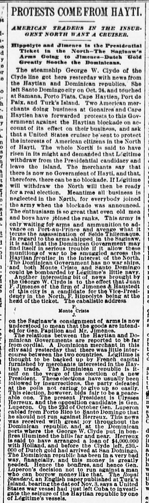
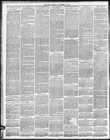

See the full pageVer la página completaIn regard to tho arms shipped In tho Saginaw, it IfCon respecto a las armas embarcadas en el Saginaw, si
The newspaper reported that arms shipped on the Saginaw for Gen. Papillon and Juan F. Jimenez risked smuggling across the Haytian frontier, which could provoke retaliation from Legitime's navy against Monte Cristo and Santo Domingo. It also noted that relations between Haytian and Dominican governments were strained, the Dominican Republic was on the verge of a presidential election featuring incumbent Ulysses Heureaux and opposition candidate Gen. Luperon (who cabled on October 22 from Porto Rico that he would not run), and past elections had typically led to insurrections.El periódico refirió que los pertrechos embarcados en el Saginaw con destino al general Papillon y Juan F. Jimenes corrían el riesgo de ser introducidos clandestinamente por la frontera haitiana, lo que provocaría represalias de la escuadrilla de Légitime contra Montecristi y Santo Domingo. Señaló asimismo que las relaciones entre los gobiernos haitiano y dominicano eran tirantes, encontrándose la República Dominicana al borde de comicios presidenciales entre el mandatario Ulises Heureaux y el aspirante opositor general Luperón (quien telegrafió el 22 de octubre desde Puerto Rico anunciando que no concurriría), habiendo derivado comúnmente las elecciones pasadas en brotes insurreccionales.
FULL TEXT:TRADUCCIÓN:
PROTESTS COME FROM HAYTI.PROTESTAS VIENEN DE HAITÍ.
AMERICAN TRADERS IN THE INSURGENT NORTH WANT A CRUISER.COMERCIANTES ESTADOUNIDENSES EN EL NORTE INSURGENTE QUIEREN UN CRUCERO.
Hippolyte and Jimenes in the Presidential Ticket in the North—The Saginaw's Arms Going to Jimenes—Dutch Gold Greatly Soothe the Dominicans.Hippolyte y Jimenes en la boleta presidencial en el Norte—Las armas del Saginaw van a Jimenes—El oro holandés calma grandemente a los dominicanos.
The steamship George W. Clyde of the Clyde line got here yesterday with news from the Haytian and Dominican republics. She left Santo Domingo city on Oct. 24, and touched at Samana, Porto Plata, Cape Haytien, Port de Paix, and Turk's Island. Two American merchants doing business at Gonaives and Cape Haytien have forwarded protests to this Government against the Haytian blockade on account of its effect on their business, and ask that a United States cruiser be sent to protect the interests of American citizens in the North of Hayti. The whole North is said to have risen in its might and demanded that Légitime withdraw from the Presidential candidacy and leave the island. The merchants say that there is now no Government of Hayti, and that, therefore, there can be no blockade. If Légitime will withdraw the North will then be ready for a real election. Meantime all business is neglected in the North, for everybody joined the army when the blockade was announced. The enthusiasm is so great that even old men and boys have joined the ranks. This army is only waiting for arms and ammunition to advance on Port-au-Prince and avenge what it terms the assassination of Seïde Thilemaque.El vapor George W. Clyde de la línea Clyde llegó aquí ayer con noticias de las repúblicas haitiana y dominicana. Salió de la ciudad de Santo Domingo el 24 de octubre, y tocó en Samaná, Puerto Plata, Cabo Haitiano, Port de Paix, y la Isla Turca. Dos comerciantes estadounidenses que hacen negocios en Gonaïves y Cabo Haitiano han enviado protestas a este Gobierno contra el bloqueo haitiano a causa de su efecto sobre sus negocios, y piden que se envíe un crucero de los Estados Unidos para proteger los intereses de los ciudadanos estadounidenses en el Norte de Haití. Se dice que todo el Norte se ha levantado en su fuerza y ha demandado que Légitime se retire de la candidatura Presidencial y abandone la isla. Los comerciantes dicen que ahora no hay Gobierno de Haití, y que, por tanto, no puede haber bloqueo. Si Légitime se retira el Norte estará entonces listo para una elección real. Entretanto todos los negocios están descuidados en el Norte, pues todo el mundo se unió al ejército cuando se anunció el bloqueo. El entusiasmo es tan grande que hasta viejos y muchachos se han unido a las filas. Este ejército solo está esperando armas y municiones para avanzar sobre Puerto Príncipe y vengar lo que llama el asesinato de Seïde Thilemaque.
In regard to the arms shipped in the Saginaw, it is said that the Dominican Government may find itself in serious trouble if it allow these munitions of war to be smuggled across the Haytian frontier in the interest of the North. The Dominican Government has no war ships, and both Monte Criste and Santo Domingo could be bombarded by Légitime's little navy.Con respecto a las armas embarcadas en el Saginaw, se dice que el Gobierno dominicano puede encontrarse en serios problemas si permite que estas municiones de guerra sean contrabandeadas a través de la frontera haitiana en interés del Norte. El Gobierno dominicano no tiene buques de guerra, y tanto Monte Criste como Santo Domingo podrían ser bombardeados por la pequeña marina de Légitime.
Another interesting bit of news brought by the George W. Clyde is to the effect that Juan F. Jimenes of the firm of Jimenes & Haustedt of this city is a candidate for the Vice-Presidency in the North, F. Hippolyte being at the head of the ticket. The cabalistic addressOtra interesante noticia traída por el George W. Clyde es al efecto de que Juan F. Jimenes de la firma de Jimenes & Haustedt de esta ciudad es candidato para la Vicepresidencia en el Norte, estando F. Hippolyte a la cabeza de la boleta. La dirección cabalística
P.P.
Monte CristeMonte Criste
J.J.
on the Saginaw's consignment of arms is now understood to mean that the goods are intended for Gen. Papillon and Mr. Jimenes.en el envío de armas del Saginaw se entiende ahora que significa que las mercancías están destinadas al general Papillon y al Sr. Jimenes.
The relations between the Haytian and Dominican Governments are reported to be far from cordial. A Dominican merchant in this city said yesterday that there was little intercourse between the two countries. Légitime is thought to be backed up by French capital furnished by merchants interested in the Haytian trade. The Dominican republic is itself on the verge of the election of a new President. These elections have usually been followed by insurrections, the party defeated at the polls not caring to give up so easily. This election, however, bids fair to be a peaceable one. The present President is Ulysses Herreux, and the opposition candidate is Gen. Luperon. On the 22d of October Gen. Luperon cabled from Porto Rico to Santo Domingo that he should not run against Herreux. This news was received with great joy throughout the Dominican republic, and at the Dominican ports where the George W. Clyde put in bonfires illumined the hills far and near. Herreux is said to have arranged a loan of $4,000,000 with Holland, and before the Clyde left, £30,000 of Dutch gold had arrived at San Domingo. The Dominican republic has been in a very bad way, financially, and this money is greatly needed. Hence the bonfires, and hence Gen. Luperon's decision not to run against a man who can borrow money like that. The Royal Standard, an English paper published at Turk's Island, bearing the date of Nov. 3, says a United States war vessel had just left Cuba to investigate the seizure of the Haytian republic by one of Légitime's vessels.Las relaciones entre los Gobiernos haitiano y dominicano se reportan estar lejos de ser cordiales. Un comerciante dominicano en esta ciudad dijo ayer que había poco comercio entre los dos países. Se piensa que Légitime está respaldado por capital francés suministrado por comerciantes interesados en el comercio haitiano. La república dominicana está ella misma al borde de la elección de un nuevo Presidente. Estas elecciones usualmente han sido seguidas por insurrecciones, no queriendo el partido derrotado en las urnas rendirse tan fácilmente. Esta elección, sin embargo, promete ser pacífica. El presente Presidente es Ulysses Herreux, y el candidato de la oposición es el general Luperon. El 22 de octubre el general Luperon cableó desde Puerto Rico a Santo Domingo que no correría contra Herreux. Esta noticia fue recibida con gran alegría en toda la república dominicana, y en los puertos dominicanos donde el George W. Clyde tocó hogueras iluminaron las colinas cerca y lejos. Se dice que Herreux ha arreglado un préstamo de $4,000,000 con Holanda, y antes de que el Clyde saliera, £30,000 de oro holandés habían llegado a Santo Domingo. La república dominicana ha estado en muy mal estado, financieramente, y este dinero es grandemente necesitado. De ahí las hogueras, y de ahí la decisión del general Luperon de no correr contra un hombre que puede tomar prestado dinero así. The Royal Standard, un periódico inglés publicado en la Isla Turca, con fecha del 3 de noviembre, dice que un buque de guerra de los Estados Unidos acababa de salir de Cuba para investigar la captura de la república haitiana por uno de los buques de Légitime.
The Sun. New York, November 10, 1888.
See the original at the Library of CongressVer el original en la Biblioteca del Congreso
Published by: Benj. H. Day, 1833-1916.Publicado por: Benj. H. Day, 1833-1916.
Edition: Edition 1Edición: edición 1
Page: 2Página: 2
Frequency: daily (1833–1916)Frecuencia: diario (1833–1916)
Collection: Chronicling America, Library of CongressColección: Chronicling America, de la Biblioteca del Congreso
LCCN: sn83030272LCCN: sn83030272
ISSN: 1940-7831ISSN: 1940-7831
OCLC: 9406339OCLC: 9406339
Rights: public domain, according to the Library of CongressDerechos: dominio público, según la Biblioteca del Congreso